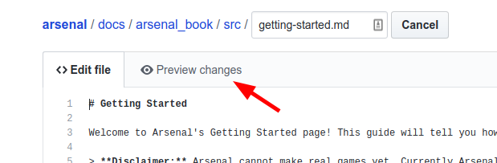
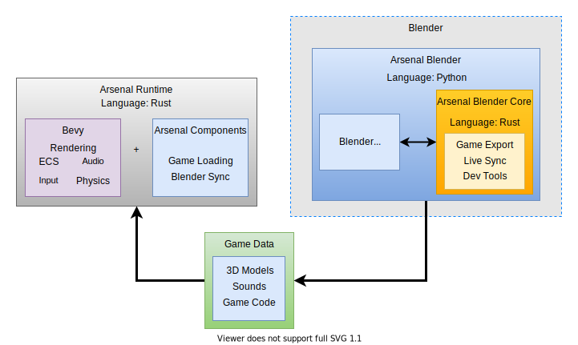

Arsenal

Project Status
We're getting back into Arsenal development! For the last year our company has been focused on other initiatives, but we've finally decided it's time to start investing in Arsenal.
We currently have one person working full time on Arsenal, primarily at our own expense, with the goal of releasing Arsenal 0.2. We want to finally produce a full prototype that can actually be used to make basic games and prove that the plan we have is feasible.
We are sprinting towards this goal as fast as we can, for we can't keep this up forever. We will need your help to keep up development! Getting sponsored on GitHub is the only way that we will be able to continue full time development of Arsenal. Our hope is to make Arsenal 0.2 a release that will spark the interest of the community and show that Arsenal will do what we say it will.
We are posting weekly updates on our progress on the Arsenal channel on our website, so stay tuned!
The Vision
Arsenal is a Blender game engine written in Rust and developed by Katharos Technology. With Arsenal we want to create an Open Source game engine that will bring the ability to make games of any scale, to users of any experience level. Arsenal will combine the powerful user interface of Blender with a high performance game engine core written in Rust.
Friendly user-experience and beginner accessibility will be important on the list of features for Arsenal, but all of that ease of use must not come at the disadvantage of performance: Arsenal should be able to produce games of any size or complexity.
To program your games, Arsenal will incorporate scripting languages such as Python, in addition to being able to use logic nodes inside of Blender for a graphical programming experience. And if you want, you will always be able to write Rust to get the maximum performance.
Arsenal is our dream for the ultimate game engine, but there is a lot of work that needs to be done. By sponsoring us on GitHub you help bring that dream to reality. You can learn more about the vision of Arsenal or check out the FAQ in the Arsenal Documentation. We also posting any updates on Arsenal development in the Arsenal category of our website.
Proof of Concept
We have downloads of our first Arsenal proof-of-concept for 64bit Windows, Mac, and Linux, and a Getting Started guide that will walk you through testing it out. This is only a proof of concept and cannot actually produce games yet. In the next release of Arsenal you will be able to make simple games with scripting.
Design & Architecture
The current design plan is to build Arsenal as a Blender plugin that uses the Bevy game engine at its core. The architecture documentation explains the components in more detail.
Bugs, Feature Requests, and Questions
If you have any questions or ideas, don't hesitate to ask! Open a GitHub issue and let us know what you're thinking.
Getting Started
Welcome to Arsenal's Getting Started page! This guide will tell you how to install Arsenal and run your first "game".
Disclaimer: Arsenal cannot make real games yet. Currently Arsenal can export your Blender scene to a game with colorless models, static lights, and an orbit camera. That's it. Still, this represents a big step in the direction of allowing you to make games inside of Blender, so if you are still interested, lets get started!
Installing
Arsenal is made up of a completely self-contained Blender plugin. Before you can use it you must install Blender 2.80 Beta. After installing Blender you can download the latest version of Arsenal from GitHub. We have builds of Arsenal for 64bit Windows, Mac, and Linux platforms.
Once you have downloaded Arsenal, start up Blender and open the user preferences.

In the Blender preferences go to the Add-ons tab and click Install.

Navigate to the arsenal zip file that you downloaded earlier and double-click it. This will add Arsenal to the Blender add-on list. Click the check box next to the add-on name to enable the add-on and then click "Save Preferences".
Note: Some versions of Blender will not have the "Save Preferences" button. In that case the preferences will be automatically saved.

You can close the preferences dialog and that's it! Now all we have to do is run a game.
Running a Game
Now that we have Arsenal installed, go ahead and save the blend. You can't run an Arsenal game if the blend has not been saved yet. After the blend is saved, we can run it! We just have to click the "Run Game" button in the "Arsenal" panel of the "Render" tab.

Here is the result:

Arsenal will export the scene with the basic cube in it and it will run a game that allows you to view your scene by moving the mouse to orbit the camera around the world center. You can hit the escape button to exit the game.
Congratulations you ran your first Arsenal game! It isn't much yet, but it's a start.
So far there are a couple things to note about the game:
- Arsenal added two lights to the scene: a blue light and a red light. Arsenal doesn't yet export the lights from the Blender scene. That will be fixed in a later release
- Arsenal only exports objects smooth shaded so the cube looks kind of non cube-like. This will also be fixed later.
Now that we've got it running, lets mess around with our scene a bit more. Go ahead and add whatever objects you want to the scene and click "Run Game" again. Arsenal will re-export the scene and run the game with your new updates.

Summary
That concludes our tutorial and shows you everything that Arsenal can do so far. The next thing that we will be working on is getting scripting support so that you can start to make the game do stuff.
If you had any trouble getting through the tutorial or if you have any questions, you can open up a Taiga issue and we'll try to get it fixed. If you like what we are doing and you think that Arsenal is cool, give us a star on GitHub!
The Vision
The vision of Arsenal is to build an Open Source game engine that is suitable for games of any scale and that is easily approachable by a wide audience of both complete beginners and seasoned experts.
Important points that effect our engine design decisions are:
- We need the engine to scale to a game of any size, even up to AAA games, with no technological bottleneck.
- The engine core should be written in Rust
- In order to make sure that engine performance is not a bottleneck, it needs to be written in a language that has multi-threading and that can integrate with native libraries.
- Rust allows full control while eliminating entire classes of bugs and preventing vulnerabilities and hard to debug issues.
- The engine core should be written in Rust
- We want the engine to be as easy to use and get started with as absolutely possible.
- We want to support visual scripting to allow non-programmers to make their own games.
- The engine should provide a full Blender integration where you build your game scenes in Blender and export them instantly to a game. ( Textual scripting initially will only be supported in an any external editor such as VSCode, however visual scripting we hope will be done directly within Blender )
- We want the engine to be efficient.
- The engine should, as much as possible, not use an absurd amount of system resources to run or develop games with.
- We want the engine to be usable by as many people as possible and on as many different computers as possible without compromising on the quality of the engine and its capabilities.
- The games in the engine should run on lower-end hardware as well as high-end hardware
- Even though Arsenal should be able to support super large games that require a lot of system resources, it should not be limited in its ability to create small lightweight games that run on less modern and/or lower resource hardware.
- The engine should, as much as possible, not use an absurd amount of system resources to run or develop games with.
- We want the engine to be mod-able.
- Modding is a very big deal to us, partially because modding was one of the major things that inspired us to make games in the first place. Allowing people to make games that can dynamically load user content is high on our priorities.
- We want the engine to be cross-platform
- The engine should be able to run on all of the major platforms including game consoles and the web:
- Windows
- Linux
- Mac
- Web
- Android
- iPhone
- PlayStation 4
- XBox One
- Nintendo Switch
- The engine should be able to run on all of the major platforms including game consoles and the web:
- We want the engine to be Open Source and built on Open Source tools so that anybody can contribute and/or modify the engine to their own use-case.
The engine should be able to compete with Unity, Unreal, Cryengine, etc. in the kinds of games you can create with it. It may or may not have all of the features of those game engines, though. The features that the engine comes with will be, at least initially, dependent on what we need to develop our own games at Katharos Technology. That doesn't mean that we won't support or integrate other features if somebody else wants to contribute them, and it doesn't mean that other features may not come later.
Even though the engine needs to be able to support large games, it should be easy to use and still be perfectly suitable for small indie games as well.
See Also: FAQ
Contributing
If you want to help Arsenal development, we welcome contributions of any kind! Whether it is writing Rust or Python, or contributing documentation or ideas, we strive to be open and communicative to our community and we want to provide you what you need to help out.
If you have any questions about how you can help, you can comment on our Taiga issue: How Can I Help Arsenal Development?.
Documentation
At Katharos Technology we place a very high value on documentation, but it can be a lot of work to create and maintain effective and helpful documentation. Any help, large or small, with Arsenal's documentation will be greatly appreciated.
Contributing to the documentation is very easy and can be done directly on GitHub without installing any tools on your computer. More details on contributing to the docs can be found in the Documentation section.
Development
If you are looking to get into Arsenal development, the Development Guide will tell you how to get started.
Documentation
The documentation for Arsenal is on this site and built with an Open Source tool called mdBook. There are two different ways you can contribute to the documentation: with the GitHub online editor, or by setting up a local sandbox on your computer.
Using GitHub
If you don't want to install any extra tools on your computer, it is easy to contribute to the documentation though the GitHub web interface. To edit a page just click the pencil icon at the top right of any page in the docs:

This will bring you to the GitHub editor for that page. You can make your edit and preview your changes with the preview button.

Once you are done, you can propose your changes. Please give your contribution a short tile and optionally a description.

After submitting that form, it will bring you to a page that summarizes the changes that you made. From there click "Create Pull Request".

Finally, you can fill out any extra information that you want us to have and, once you submit it, we will review your changes and either merge them or comment on what we would like changed.

That's it! 🎉
Using a Local Sandbox
Before you can make changes in your local sandbox, you have to create it! See the Using Git guide to learn how get your sandbox setup and how to make changes and contribute them. Once you understand how that works, you can start making changes.
All of the documentation for Arsenal is written in Markdown, a simple markup language. The documentation can be found in the docs/arsenal_book/src directory. You can edit those files with your favorite text editor. If you just want to make simple changes, then that could be all that you need, but if you want to get a live preview of what your changes will look like on the actual site, then you can install mdBook.
Installing mdBook
mdBook is the tool that we use to convert our markdown documentation to a nice looking documentation website. You can read the mdBook Documentation if you want to understand more about how it works. For now, though, go ahead and download and install the latest release of mdBook.
Serving the Site Locally
Once mdBook is installed, to view the site locally, open a terminal in the docs/arsenal_book directory and run:
$ mdbook serve -o
2019-07-19 19:43:20 [INFO] (mdbook::book): Book building has started
2019-07-19 19:43:20 [INFO] (mdbook::book): Running the html backend
2019-07-19 19:43:20 [INFO] (mdbook::cmd::serve): Serving on: http://localhost:3000
2019-07-19 19:43:20 [INFO] (ws): Listening for new connections on 127.0.0.1:3001.
2019-07-19 19:43:20 [INFO] (mdbook::cmd::watch): Listening for changes...
2019-07-19 19:43:24 [INFO] (ws::io): Accepted a new tcp connection from 127.0.0.1:48088.
mdBook will build the site and open it in your web browser. Additionally, mdBook will watch the docs for changes and update the site automatically.
Development Guide
Welcome to the development guide! This guide will tell you everything you need to get started with Arsenal development. If you have any questions or are having trouble getting started, go ahead and create an issue and we will try to help.
Architecture
At a high level, Arsenal is composed of three main components, all of which are located in the root of the Arsenal git repository: Arsenal Blender, Arsenal Blender Core, and Arsenal Runtime.

Arsenal Blender
Arsenal Blender is the top level of the Arsenal Blender plugin. Arsenal Blender contains all of the Python code that creates the Arsenal UI elements and operators inside of Blender. Arsenal Blender is the "glue" that binds the Arsenal Blender Core and the Arsenal Runtime to the Blender interface. If you want to work on our Blender user-experience, this is the place to start.
Arsenal Blender Core
The Arsenal Blender Core is the portion of the Blender plugin that is written in Rust and that handles most of the heavy lifting in the Blender plugin. Arsenal Blender uses the Arsenal Blender Core to do the more process intensive tasks and it will use it to communicate with your Arsenal game while it is running to provide features like hot reload and live sync.
The goal of the Arsenal Blender Core is to provide the highest possible performance and to remove any limits on what the Arsenal Blender plugin can do. Because it is written in Rust instead of Python, the Arsenal Blender Core can accomplish things like multi-threading and communicating with native system libraries when necessary.
The Arsenal Blender Core is implemented as a native Python module and, even though it is written in Rust, it is imported by Arsenal Blender just like any other Python module would be. Because the Arsenal Blender Core is imported by Arsenal Blender, both components run fully inside of the Blender process.
Game Data
When you run an Arsenal game, your Blender file and all of the Logic Nodes and other code get exported to a build_[projectname] directory adjacent to the Blend. The Arsenal Blender Core is responsible for doing the export. The exported data is then loaded and run inside the Arsenal Runtime.
Arsenal Runtime
The Arsenal Runtime is what is responsible for actually running the game data that is exported from Blender. This runs completely outside of Blender. This is important for licensing reasons, because you can not commercially market a game that has any Blender code in it. Arsenal games, despite being developed in Blender, will have no Blender code in the game.
The Arsenal Runtime is written in Rust and combines great tools from the Rust gamedev community. The core of the Arsenal runtime is built on top of the Bevy game engine.
Bevy
Bevy will pull al lot of the weight in the Arsenal runtime and provides windowing, audio, an ECS, a Renderer, an input system, and other components foundational to a running game. Bevy takes care of a lot of the difficult aspects of designing a game engine for us and allows us to focus on our Blender user experience and integration.
Bevy is also very modular in design which allows us to add or replace components as we need without locking us into a particular design.
Arsenal Components
In addition to Bevy, we will also be developing components that are specific to Arsenal. This will include things like live Blender sync and other features, many of which will still be built on top of other Bevy components. These will also be bundled into the Arsenal Runtime.
Building Arsenal
Note: Currently, building Arsenal involves manually compiling the separate components and copying them to the correct spot in the Blender plugin. This process will soon be automated using a makefile so that you don't have to manually structure the project during development.
Prerequisites
All OSes
For every OS you will need to have Rust installed. The easiest way to do that is with Rustup.
You also need Rust nightly and Rust 1.35 which can be installed with Rustup:
rustup toolchain install nightly
rustup toolchain install stable-2019-05-23
Windows and MacOS
On Windows and MacOS you need to install Python 3.7 which can be downloaded from Python.org.
Linux
On Linux you will need to install the Amethyst Dependencies and python3-dev.
Building Arsenal Blender Core
The Arsenal Blender Core (Core) is in the arsenal_blender_core directory in the git repository. The Core is a normal rust crate and can be built with Cargo.
cd arsenal_blender_core
cargo +nightly build
Cargo Features
There is an optional feature for Core called enable_profiling that will dump a flamegraph to the current directory when executing the Blender export. This can be useful for investigation potential performance optimizations ( see Systems Performance Work Guided By Flamegraphs ).
cargo +nightly build --features enable_profiling
Once that finishes we can build the Arsenal Runtime.
Building Arsenal Runtime
The Arsenal Runtime is in the arsenal_runtime dir. The Arsenal Runtime is also built with Cargo:
cd arsenal_runtime
cargo +stable-2019-05-23 build
Packaging Arsenal Blender Plugin
After you have built Core and the Runtime, you have to copy the built assets to the arsenal_blender dir. On Linux and MacOS you can create symlinks to avoid having to re-copy the assets every time you rebuild them during development.
# Do this in the root of the repository. We assume you are using Git Bash on
# Windows.
# This is the same for all platforms
mkdir arsenal_blender/bin
# The library names are different for different platforms
# Windows
cp arsenal_runtime/target/debug/arsenal_runtime arsenal_blender/bin
cp arsenal_blender_core/target/debug/core.dll arsenal_blender/core.pyd
# Linux
ln -s ../../arsenal_runtime/target/debug/arsenal_runtime arsenal_blender/bin
ln -s ../arsenal_blender_core/target/debug/libcore.so arsenal_blender/core.so
# MacOS
ln -s ../../arsenal_runtime/target/debug/arsenal_runtime arsenal_blender/bin
ln -s ../arsenal_blender_core/target/debug/libcore.dylib arsenal_blender/core.so
After those are in place, you can copy, on Windows, or symlink, on Mac and Linux, the arsenal_blender dir to your blender Addons directory.
# Windows
cp arsenal_blender ${APPDATA}/Blender\ Foundation/Blender/2.80/scripts/addons
# Linux
ln -s /path/to/arsenal/arsenal_blender ~/.config/blender/2.8/scripts/addons
# MacOS
ln -s /path/to/arsenal/arsenal_blender /Users/yourusername/Library/Application\ Support/Blender/2.80/scripts/addons/
When that is done you just have to enable the plugin from the Blender interface and you are finished!
Using Git
Git is our source code management tool. It provides a way to keep track of our changes and handle multiple different people contributing to the project at the same time.
Note: There is a lot that you could learn about Git, but only a little that you need to know to start contributing to Arsenal. Here we will go through the basics of getting started with Git for contributing to Arsenal, but we will not be able to cover everything.
If you are having trouble getting started, feel free to open an issue and we will try to help you. Also, if you need a more comprehensive guide to Git, check out the Pro Git Book which can be read online for free.
Installing Git
To install Git, head over to the Git Download Page and follow the instructions for you operating system.
After you have installed Git you can move on to creating your own sandbox to make changes in.
Creating a Sandbox
Once you have Git installed, you can download or clone your own copy of the Arsenal project to your computer. The first step to that is to fork the Arsenal GitHub repository.
Forking Arsenal
A fork on GitHub is like your own personal copy of somebody else's GitHub repository. In your own fork, you can make any sort of changes that you want, without having to get approval or worry about ruining somebody else's work. Once you are happy with the changes that you have made in your fork, you can create a pull request to the original repository and ask that you changes get included in the official repo.
You can create a fork on GitHub by clicking the fork icon in the top right corner of the GitHub repository home page.

GitHub will take a second to fork the repo before presenting you with your own copy of the Arsenal project! You can tell that it is a fork because it will have your name in the upper-left hand and a note that it was forked from katharostech/arsenal.

Now that you have a fork, you can clone it to your computer.
Cloning Your Fork
In order to test and make changes to your fork, you need to clone it to your computer. Cloning is a Git term that means to copy the repo to a local machine with all of the included Git history. When you clone a repo, it doesn't just give you the current state of the repo, but the entire history of the repo since it was created. It also keeps track of what is necessary to get the latest changes to the repo when things are updated.
On the homepage of your fork, there will be a green button that says "Clone or Download". Click this button and copy the URL inside to your clipboard.

Now you have to find a place that you want to put the repo on your system. Probably in a "git" folder somewhere. Once you have that, you have to open up your Git terminal in that directory. On Windows, the Git terminal, or Git Bash, would have been installed when you installed Git and you can open it by right-clicking on a folder and selecting "Open with Git Bash".
Inside of the terminal paste the following, replacing the URL with the URL that you copied from your fork.
git clone https://github.com/zicklag/arsenal.git
This will clone the repo to a directory named "arsenal" wherever you opened the terminal. You can now browse the whole Arsenal repo on your computer.
Adding the Arsenal Remote
Now that you have cloned your fork, you need to tell Git about the official Arsenal repo so that you can get updates when we make changes.
In your terminal, we will change directory to the newly cloned repository and then add a new remote called "arsenal" and set it to the official Arsenal repo:
cd arsenal
git remote add arsenal https://github.com/katharostech/arsenal.git
Now that git knows about our official Arsenal repo, you can update your local sandbox with the latest changes from GitHub by running:
$ git pull arsenal master
From https://github.com/katharostech/arsenal
* branch master -> FETCH_HEAD
Current branch my-changes is up to date.
Note: Don't type the
$sign. Lines that start with a$represent lines that you are supposed to type. Lines without a$indicate lines that were output by git.
Making Changes
Creating a Branch
When making changes to a Git repository, you usually do your changes in what is called a Git branch. A branch is like a stream in which you can make changes in your Git repo without effecting other branches. This allows you to work on multiple things at the same time, without getting different separate changes mixed up with each-other. For each change that you will want to submit to Arsenal, you should create a branch to do it in.
First open your Git terminal in the Arsenal git repository. If you type git status in the terminal and hit enter, it will tell you that you are on the branch "master" and that there is nothing to commit:
$ git status
On branch master
Your branch is up-to-date with 'origin/master'.
nothing to commit, working directory clean
This means that you are on the branch master and there have been no changes.
Now we are going to create a new branch to make some changes in:
$ git branch my-changes
$ git checkout my-changes
On branch my-changes
nothing to commit, working directory clean
First we run git branch my-changes which creates a new branch called my-changes, then we run git checkout my-changes to switch our current branch to the new branch that we just created. Git then tells us that we have created a new branch and that there are no changes.
You can switch back and forth between branches whenever you want by running git checkout branch-name.
Making a Change
Now that we have a branch to work in, its time to make some changes! Go ahead and change some files. Maybe you could contribute to the documentation. Once you have made some changes, we can see what has happened by running git status:
$ git status
On branch my-changes
Changes not staged for commit:
(use "git add <file>..." to update what will be committed)
(use "git checkout -- <file>..." to discard changes in working directory)
modified: docs/arsenal_book/src/FAQ.md
no changes added to commit (use "git add" and/or "git commit -a")
Git tells us that a file has been changed. Before git will "save" the change, though, we have to commit the change. Before we can commit the change we need to add the changes that we want to commit.
$ git add .
$ git commit -m 'Add an FAQ'
[my-changes d777617] Add an FAQ
1 file changed, 4 insertions(+)
The reason for a separate add step is to allow you to add only the changes that you want to, in case there were multiple changes and you only wanted some of them. When we said git add . the . meant that we want to add everything in the current directory and any directories in the current directory.
When we say git commit -m 'Add an FAQ' the -m tells Git to create a commit with the following message which we put inside of single quotes. Once that is done, we can see our new commit by doing a git log:
$ git log
commit d777617c3056137e14c5a66546d3f9782f13c031
Author: Zicklag <zicklag@katharostech.com>
Date: Fri Jul 19 18:21:31 2019 -0500
Add an FAQ
commit ec8c092a3ff9da84383e486e09ab204846abc4ca
Author: Zicklag <zicklag@katharostech.com>
Date: Thu Jul 18 22:09:54 2019 -0500
Add Unreleased Changes to the Changelog
- Add a development guide to the arsenal book
- Move arsenal book to the docs/ folder
- Organize project structure to better separate the modules
commit 8f433b10208b1c68cc42ec745889a78a9acb1641
Author: Zicklag <zicklag@katharostech.com>
Date: Wed Jul 17 21:04:26 2019 -0500
:
You can move up and down through the history with the k and j keys and you can exit with the q key. The log will show our latest commit on top of the stack and all of the other commits in history below it.
Pushing Your Changes
Now that we have made our change and committed it, we can push it up to our fork on GitHub:
$ git push origin my-changes
Username for 'https://github.com': zicklag
Password for 'https://zicklag@github.com':
Counting objects: 6, done.
Delta compression using up to 4 threads.
Compressing objects: 100% (5/5), done.
Writing objects: 100% (6/6), 483 bytes | 0 bytes/s, done.
Total 6 (delta 4), reused 0 (delta 0)
remote: Resolving deltas: 100% (4/4), completed with 4 local objects.
remote:
remote: Create a pull request for 'my-changes' on GitHub by visiting:
remote: https://github.com/zicklag/arsenal/pull/new/my-changes
remote:
To https://github.com/zicklag/arsenal.git
* [new branch] my-changes -> my-changes
When we run git push origin my-changes we are telling Git to push the changes in the current branch to our origin, is our fork, where we cloned the repo from. We also have to tell it push to a branch named my-changes in our fork. Once that is done, GitHub conveniently gives us a link that we can use to create a pull request so that we can get our changes merged into the official Arsenal repo.
Creating a Pull Request
You can now follow the link that Git provided to create a pull request for your changes.

Here you can add any extra information that might be applicable to your changes, and once you submit the pull request, we will review your changes and either merge them or comment on what we would like changed.
If we request changes, you can make the changes, add and commit them, and push them again just like you already have. This will update your pull request automatically.
Once your changes have been approved, they will be merged into the project and you will be an official contributor!
Finishing Up
After your pull request has been merged you can checkout the master branch again and pull in the latest changes from the official repo to make sure you are up to date.
$ git checkout master
Switched to branch 'master'
Your branch is up-to-date with 'origin/master'.
$ git pull arsenal master
From https://github.com/katharostech/arsenal
* branch master -> FETCH_HEAD
Current branch master is up to date.
You are now ready to create a new branch and start making more contributions.
FAQ
Is being cross platform one of your game engine's main focus?
Yes. Arsenal should be able to deploy to every major target out there including:
- Windows
- Linux
- MacOS
- Android
- iOS
- XBox
- PlayStation
- Nintendo Switch
Support for all of these platforms will most likely not exist initially, but it is our ultimate goal that these platforms will be supported in the future.
What platform will your engine focus on?
To start we will focus on the desktop platforms: Linux, Windows, and Mac. After that we will want to go to web, mobile, and consoles.
What dimension will your game engine focus on?
Arsenal should be fully suitable for both 3D and 2D games. The goal will be to provide fully featured 3D support while additionally extending Blender's UX with extra features designed to make it easy to create 2D games
What will your game engine feature?
That is less clear at the present time. We will start by focusing on the core elements needed to make any game and on giving the developer enough control to work anything that they might need into their game. More specific features like terrain and AI editors would be great to work in eventually, but our development effort will initially be focused on creating a solid core that future features can build on.
When do you intend to release the first version? (1.0)
We have no way of determining an accurate timeline at this point. It will definitely be more of a "work on it until we feel it is stable".
We are going to develop a "living" roadmap that we will update as we figure out what we need to work into the engine. Initially it will likely be rather inaccurate until we figure out more of what needs to be worked into Arsenal.
How do you support your game engine development?
Work on Arsenal will be funded through GitHub sponsors. If we receive enough funding through GitHub sponsors we will be able to pay at least one developer to work full time on Arsenal and other related game development tooling. Every little bit counts and with donation tiers starting at $1/month GitHub sponsors makes it easy to say thanks and contribute to our work!
What will be your game engine license?
The current plan is for the engine to be licensed under MIT, but the ownership of the copyright will be reserved by Katharos Technology. That means that contributors have to sign a CLA and that we may re-license the engine under any other license that we choose if we need to for any reason. This is to protect us, as an organization, from putting a legal restriction on our use of our own software that we may regret later. We have the full intention of always providing the software under a free and Open Source license; part of what we want to accomplish with Katharos Technology is to give people the tools they need to make their own games.
How Do You Decide What Features to Work On?
Our goal right now is to establish, one layer at a time, the foundation necessary to build quality games. Features worked on next will be those that are foundational and required for every working game. We want to get the engine to a point where it is stable enough to actually produce a game, before we start adding all of the bells and whistles.
After that, development will be focused on a combination of the community's needs and our own needs as we start developing games with the engine.
Why Does Arsenal Export glTF Instead of Just Using Blender Files?
There are three reasons:
- Maintenance: Keeping up with the Blender file format could be time-consuming as it is a moving target. Comparatively, the glTF format is very simple and standardized.
- Storage: The blender format contains a lot of metadata that we don't need for a game, such as the Blender UI layout.
- Efficiency: If you use the Blender file format, the game would have to decode the .blend file while the game is running. This would involve going through more information than is actually needed in the game and would require more CPU to get the required data. glTF is a very dense format that compactly stores the information we need while also facilitating efficient extraction into a running game.
News
Here is a record of significant events or updates made to the engine. We will make an effort to keep this up-to-date as things progress.
July 2019
- 6th: The first release of Arsenal!
June 2019
- 23rd: The Basic glTF Exporter was merged. The exporter proved out the ability to write a Blender plugin in Rust. The advantages of using Rust were demonstrated in Rust's strong type system and its amazing performance. Our exporter was able to perform 22 times faster than the official Blender glTF Exporter by the Khronos Group.
- 10th: Announcement of project on Amethyst form
- 3rd: Initial commit on the Arsenal repository